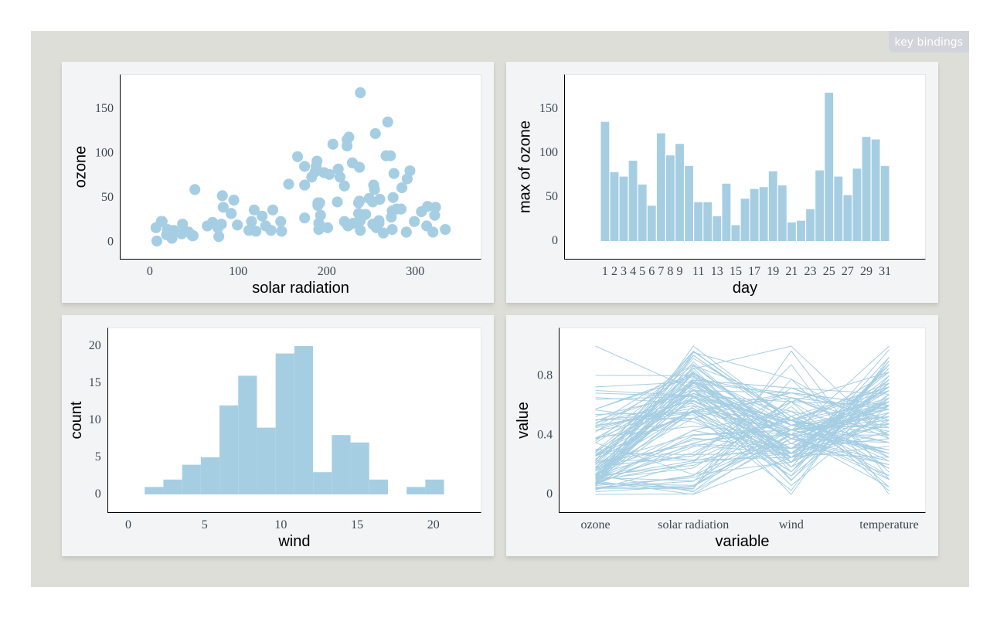

Plotscaper is an R package designed for making interactive figures for data exploration. All plots in plotscaper support linked selection by default, as well as wide variety of other interactions, including, zooming, panning, reordering, and parameter manipulation.
The package powering plotscaper figures (plotscape) is written in (mostly) vanilla TypeScript/JavaScript and uses no external dependencies/framework for reactivity.
To get started, install plotscaper with:
devtools::install_github("bartonicek/plotscaper")Next, open up RStudio and run the following code:
library(plotscaper)
names(airquality) <- c("ozone", "solar radiation", "wind",
"temperature", "month", "day")
create_schema(airquality) |>
add_scatterplot(c("solar radiation", "ozone")) |>
add_barplot(c("day", "ozone"), list(reducer = "max")) |>
add_histogram(c("wind")) |>
add_pcoords(names(airquality)[1:4]) |>
render()
#> Warning in create_schema(airquality): Removed 42 rows with missing values from
#> the data
In your viewer, you should now see something like the image above, however, your version should be fully interactive. Try clicking and dragging to select a few points on the scatterplot!
(Github doesn’t allow JavaScript in README.md, hence why the image above is just a static snapshot, however, other vignettes should have fully interactive figures)